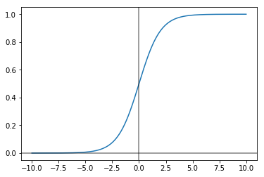
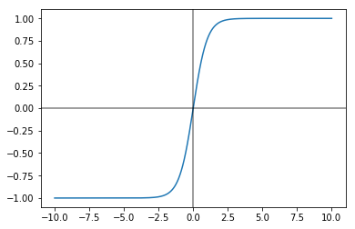
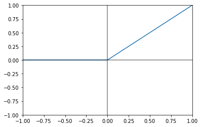

Activation Functions
%pylab inline
X = np.linspace(-10, 10, 1000)Populating the interactive namespace from numpy and matplotlib
Each time we study Neural Networks, there’s always this intermediate activation function that makes the dot product of our input X and our weights W more palatable.
Sigmoid
This is typically the first one that we learn and it is very convenient because it keeps our outputs bound between 0 and 1.
fig, ax = plt.subplots()
ax.plot(X, 1 / (1 + np.exp(-X)))
ax.axvline(0, color='k', alpha=.5)
ax.axhline(0, color='k', alpha=.5)<matplotlib.lines.Line2D at 0x80aca58>

The equation itself is of the form
$g(z) = \frac{1}{1 + e^{-z}}$
And its derivative is
$\frac{1}{1 + e^{-z}}(1 - \frac{1}{1 + e^{-z}}) \quad \text{or} \quad a (1 - a)$
But as we’ll see below, we should really only be using the sigmoid function if it’s the last activation function in a Neural Network and is populating a final classification layer that needs values between 0 and 1.
tanh
Far-preferable to the sigmoid function is the tanh function.
Although it sits atop a complicated equation
$g(z) = \frac{e^{z} - e^{-z}}{e^{z} + e^{-z}}$
it is very valueable because it’s essentially a shifted version of the sigmoid function. The means of the outputs are centered around 0, and not 0.5, thus making it easier for subsequent activation layers to learn from.
fig, ax = plt.subplots()
ax.plot(X, np.tanh(X))
ax.axvline(0, color='k', alpha=.5)
ax.axhline(0, color='k', alpha=.5)<matplotlib.lines.Line2D at 0x817cef0>

It’s derivative is of the form
$1 - (\tanh(z))^{2}$
ReLU
Both of the activation functions above have a critical flaw worth mentioning and that’s how they deal with large data values.
Because their derivatives are near zero for values greater and less than 5, it slows down training considerably because gradient descent is just inching along.
And so the Rectified Linear Unit simply exists to
- Ensure strictly positive values
- Make for easy calculations of derivatives if nonzero
It looks like
$ g(z) = max(0, z)$
fig, ax = plt.subplots()
ax.plot(X, np.maximum(X, 0))
ax.axvline(0, color='k', alpha=.5)
ax.axhline(0, color='k', alpha=.5)
ax.set_xlim([-1, 1])
ax.set_ylim([-1, 1])(-1, 1)

It’s derivative is trivial
$ 0 \quad \text{if} \quad z < 0$
$ 1 \quad \text{if} \quad z \geq 0 $